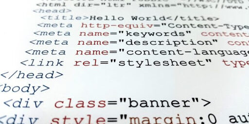

ระดับภาษาคอมพิวเตอร์

คอมพิวเตอร์อาจแบ่งได้เป็น 3 ระดับ คือ ภาษาเครื่อง (Machine Language) ภาษาระดับต่ำ (Low Level Language) และภาษาระดับสูง (High Level Language)
1 ภาษาเครื่อง (Machine Language) การ เขียนโปรแกรมเพื่อสั่งให้คอมพิวเตอร์ทำงานในยุคแรก ๆ จะต้องเขียนด้วยภาษาซึ่งเป็นที่ยอมรับของเครื่องคอมพิวเตอร์ที่เรียกว่า “ภาษาเครื่อง” ภาษานี้ประกอบด้วยตัวเลขล้วน ทำให้เครื่องคอมพิวเตอร์สามารถทำงานได้ทันที ผู้ที่จะเขียนโปรแกรมภาษาเครื่องได้ ต้องสามารถจำรหัสแทนคำสั่งต่าง ๆ ได้ และในการคำนวณต้องสามารถจำได้ว่าจำนวนต่าง ๆ ที่ใช้ในการคำนวณนั้นถูกเก็บไว้ที่ตำแหน่งใด ดังนั้นโอกาสที่จะเกิดความผิดพลาดในการเขียนโปรแกรมจึงมีมาก นอกจากนี้เครื่องคอมพิวเตอร์แต่ละระบบมีภาษาเครื่องที่แตกต่างกันออก ทำให้เกิดความไม่สะดวกเมื่อมีการเปลี่ยนเครื่องคอมพิวเตอร์เพราะจะต้องเขียน โปรแกรมใหม่ทั้งหมด
2 ภาษาระดับต่ำ (Low Level Language) เนื่อง จากภาษาเครื่องเป็นภาษาที่มีความยุ่งยากในการเขียนดังได้กล่าวมาแล้ว จึงไม่มีผู้นิยมและมีการใช้น้อย ดังนั้นได้มีการพัฒนาภาษาคอมพิวเตอร์ขึ้นอีกระดับหนึ่ง โดยการใช้ตัวอักษรภาษาอังกฤษเป็นรหัสแทนการทำงาน การใช้และการตั้งชื่อตัวแปรแทนตำแหน่งที่ใช้เก็บจำนวนต่าง ๆ ซึ่งเป็นค่าของตัวแปรนั้น ๆ การใช้สัญลักษณ์ช่วยให้การเขียนโปรแกรมนี้เรียกว่า “ภาษาระดับต่ำ”ภาษาระดับต่าเป็นภาษาที่มีความหมายใกล้เคียงกับภาษาเครื่อง มากบางครั้งจึงเรียกภาษานี้ว่า “ภาษาอิงเครื่อง” (Machine – Oriented Language) ตัวอย่างของภาษาระดับต่ำ ได้แก่ ภาษาแอสเซมบลี เป็นภาษาที่ใช้คำในอักษรภาษาอังกฤษเป็นคำสั่งให้เครื่องทำงาน เช่น ADD หมายถึง บวก SUB หมายถึง ลบ เป็นต้น การใช้คำเหล่านี้ช่วยให้การเขียนโปรแกรมง่ายขึ้นกว่าการใช้ภาษาเครื่องซึ่ง เป็นตัวเลขล้วน ดังตารางแสดงตัวอย่างของภาษาระดับต่ำและภาษาเครื่องที่สั่งให้มีการบวกจำนวน ที่เก็บอยู่ในหน่วยความจำ ตารางที่ 5.1 แสดงความสัมพันธ์ของคำสั่งในภาษาระดับต่ำและภาษาเครื่อง ภาษาระดับต่ำ ภาษาเครื่อง รหัสเลขฐานสิบหก MOV AL,05 10110000 00000101 B0 05 MOV BL,08 10110011 00001000 B3 08 ADD AL,BL 00000000 11011000 00 D8 MOV CL,AL 10001000 11000001 88 C1 จาก ตารางบรรทัดแรก 10110000 00000101 เป็นคำสั่งให้นำจำนวน 5 (หรือเขียนในรูปของเลขฐานสองเป็น 00000101) ไปเก็บในรีจิสเตอร์ชื่อ AL โดยส่วนแรก 10110000 คือรหัสคำสั่ง MOV ซึ่งเป็นการเคลื่อนย้ายข้อมูลจำนวนมาเก็บไว้ในรีจิสเตอร์ AL บรรทัดที่ สอง 10110011 00001000 เป็นคำสั่งให้นำจำนวน 8 (หรือเขียนในรูปของเลขฐานสองเป็น 00001000) ไปเก็บในรีจิสเตอร์ชื่อ BL โดยส่วนแรก 10110011 คือรหัสคำสั่ง MOV ซึ่งเป็นการเคลื่อนย้ายข้อมูลจำนวนมาเก็บไว้ในรีจิสเตอร์ BL บรรทัดที่สาม เป็นคำสั่งการบวกระหว่างรีจิสเตอร์ AL กับ BL หรือนำ 5 บวก 8 ผลลัพธ์เก็บในรีจิสเตอร์ AL บรรทัดที่สี่ เป็นการนำผลลัพธ์จากรีจิสเตอร์ชื่อ AL ไปเก็บไว้ในรีจิสเตอร์ชื่อ CL การ ใช้โปรแกรมที่เขียนด้วยภาษาแอสเซมบลีนั้น เครื่องคอมพิวเตอร์ไม่สามารถทำงานได้ทันที จำเป็นต้องมีการแปลโปรแกรมในการแปลที่มีชื่อว่า “แอสเซมเบลอร์” (Assembler) ซึ่งแตกต่างไปตามเครื่องคอมพิวเตอร์แต่ละชนิด ดังนั้นแอสเซมเบลอร์ของเครื่องชนิดหนึ่งจะไม่สามารถใช้แปลโปรแกรมภาษาแอสเซ มบลีของเครื่องชนิดอื่น ๆ ได้ภาษาแอสเซมบลีนี้ยังคงใช้ยาก เพราะผู้เขียนโปรแกรมจะต้องเข้าใจในการทำงานของเครื่องคอมพิวเตอร์อย่าง ละเอียด ต้องรู้ว่าจำนวนที่จะนำมาคำนวณนั้นอยู่ ณ ตำแหน่งใดในหน่วยความจำในทำนองเดียวกับการเขียนโปรแกรมเป็นภาษาเครื่อง ภาษาแอสเซมบลีจึงมีผู้ใช้น้อย และมักจะใช้ในกรณีที่ต้องการควบคุมการทำงานภายในของตัวเครื่องคอมพิวเตอร์
3 ภาษาระดับสูง (High Level Language) ภาษา ระดับสูงเป็นภาษาที่สร้างขึ้นเพื่อช่วยอำนวยความสะดวกในการเขียนโปรแกรม กล่าวคือลักษณะของคำสั่งจะประกอบด้วยคำต่าง ๆ ในภาษาอังกฤษ ซึ่งผู้อ่านสามารถเข้าใจความหมายได้ทันที ผู้เขียนโปรแกรมจึงเขียนโปรแกรมด้วยภาษาระดับสูงได้ง่ายกว่าเขียนด้วยภาษาแอ สเซมบลีหรือภาษาเครื่อง ภาษาระดับสูงมีมากมายหลายภาษา อาทิเช่น ภาษาฟอร์แทรน (FORTRAN) ภาษาโคบอล (COBOL) ภาษาปาสคาล (Pascal) ภาษาเบสิก(BASIC) ภาษาวิชวลเบสิก (Visual Basic) ภาษาซี (C) และภาษาจาวา (Java) เป็นต้น โปรแกรมที่เขียนด้วยภาษาระดับสูงแต่ละภาษาจะต้องมีโปรแกรมที่ทำหน้าที่แปล ภาษาระดับสูงให้เป็นภาษาเครื่อง เช่น โปรแกรมแปลภาษาฟอร์แทรนเป็นภาษาเครื่อง โปรแกรมแปลภาษาปาสคาลเป็นภาษาเครื่อง คำสั่งหนึ่งคำสั่งในภาษาระดับสูงจะถูกแปลเป็นภาษาเครื่องหลายคำสั่ง ภาษาระดับสูงที่จะกล่าวถึงในที่นี้ ได้แก่
1) ภาษาฟอร์แทรน (FORmula TRANstation : FORTRAN) จัด เป็นภาษาระดับสูงที่เก่าแก่ที่สุด ได้รับการคิดค้นขึ้นเป็นครั้งแรก ราว พ.ศ. 2497 โดยบริษัท ไอบีเอ็ม เป็นภาษาที่เหมาะสำหรับงานที่ต้องการการคำนวณ เช่น งานทางด้านวิทยาศาสตร์ วิศวกรรมศาสตร์ และงานวิจัยต่าง ๆ เนื่องจากแนวคิดในการเขียนโปรแกรมในระยะหลังนี้เปลี่ยนมานิยมการเขียน โปรแกรมแบบโครงสร้างมากขึ้น ลักษณะของคำสั่งภาษาฟอร์แทรนแบบเดิมไม่เอื้ออำนวยที่จะให้เขียนได้ จึงมีการปรับปรุงโครงสร้างของภาษาฟอร์แทรนให้สามารถเขียนโปรแกรมแบบโครง สร้างขึ้นมาได้ในปี พ.ศ. 2509 เรียกว่า FORTRAN 66 และในปี พ.ศ. 2520 สถาบันมาตรฐานแห่งชาติของสหรัฐอเมริกา (American National Standard Institute หรือ ANSI) ได้ปรับปรุง FORTRAN 66 และยอมรับให้เป็นภาษาฟอร์แทรนที่เป็นมาตรฐาน เรียกว่า FORTRAN 77 ใช้ได้กับเครื่องคอมพิวเตอร์ที่มีตัวแปลภาษานี้
2) ภาษาโคบอล (Common Business Oriented Language : COBOL) เป็น ภาษาที่พัฒนาขึ้นในราว พ.ศ. 2502 ต่อมาได้รับการปรับปรุงจากคณะกรรมการซึ่งเป็นตัวแทนของหน่วยงานธุรกิจและ รัฐบาลของสหรัฐอเมริกา เป็นภาษาโคบอลมาตรฐานในปี พ.ศ. 2517 เป็นภาษาที่เหมาะสมสำหรับงานด้านธุรกิจ เครื่องคอมพิวเตอร์ขนาดใหญ่ส่วนมากมีโปรแกรมแปลภาษาโคบอล
3) ภาษาเบสิก (Beginner’s All – purpose Symbolic Instruction Code : BASIC) เป็น ภาษาที่ได้รับการคิดขึ้นเป็นครั้งแรกที่วิทยาลัยดาร์ทมัธ (Dartmouth College) และเผยแพร่เป็นทางการในปี พ.ศ. 2508ภาษาเบสิกเป็นภาษาที่สร้างขึ้นโดยมีจุดประสงค์เพื่อใช้สอนเพื่อใช้สอน เขียนโปรแกรมแทนภาษาคอมพิวเตอร์ภาษาอื่น เช่น ภาษาฟอร์แทรน ซึ่งมีขนาดใหญ่และต้องใช้หน่วยความจำสูงในการทำงาน ซึ่งไม่เหมาะกับเครื่องคอมพิวเตอร์ในสมัยนั้น ภาษาเบสิกเป็นภาษาที่มีขนาดเล็ก เป็นตัวแปลภาษาชนิดที่เรียกว่าอินเทอร์พรีเตอร์ นอก จากนี้ ภาษาเบสิกเป็นภาษาที่ง่ายต่อการเขียน ซึ่งผู้เขียนจะสามารถนำไปประยุกต์กับการแก้ปัญหาต่าง ๆ ได้ทุกสาขาวิชา ผู้ที่เพิ่งฝึกเขียนโปรแกรมใหม่ ๆ หรือผู้ที่ไม่ใช่นักเขียนโปรแกรมมืออาชีพ แต่เป็นเพียงวิศวกรหรือนักวิจัย จะสามารถหัดเขียนโปรแกรมภาษาเบสิกได้ในเวลาไม่นานนัก ปกติภาษาเบสิกส่วนใหญ่ใช้กับไมโครคอมพิวเตอร์
4) ภาษาปาสคาล (Pascal) ตั้ง ชื่อตามนักคณิตศาสตร์ชาวฝรั่งเศส ชื่อ เบลส ปาสคาล (Blaise Pascal) ซึ่งเป็นผู้ผลิตเครื่องคิดเลขโดยใช้เฟืองหมุน ภาษาปาสคาลคิดขึ้นในปี พ.ศ. 2514 โดยนิคลอส เวียซ (Niklaus Wirth) ศาสตราจารย์วิชาคอมพิวเตอร์ชาวสวิต ภาษาปาสคาลได้รับการออกแบบให้ใช้ง่ายและมีโครงสร้างที่ดี จึงเหมาะกับการใช้สอนหลักการเขียนโปรแกรม ปัจจุบันภาษาปาสคาลยังคงได้รับความนิยมใช้ในการเรียนเขียนโปรแกรม คอมพิวเตอร์
5) ภาษาซีและซีพลัสพลัส (C และ C++) ภาษา ซีเป็นภาษาที่พัฒนาจากห้องปฏิบัติการเบลล์ของบริษัทเอทีแอนด์ทีในปี พ.ศ. 2515 หลังจากที่พัฒนาขึ้นได้ไม่นาน ภาษาซีก็กลายเป็นภาษาที่นิยมในหมู่นักเขียนโปรแกรมมาก และมีใช้งานในเครื่องทุกระดับ ทั้งนี้เนื่องจากภาษาซีได้รวมเอาข้อมูลของภาษาระดับสูงและภาษาระดับต่ำเข้า ไว้ด้วยกัน กล่าวคือเป็นภาษาที่มีไวยากรณ์ที่เข้าใจง่าย ทำให้เขียนโปรแกรมได้ง่ายเช่นเดียวกับภาษาระดับสูงทั่วไป แต่ประสิทธิภาพและความเร็วในการทำงานดีกว่ามาก เนื่องจากมีการทำงานเหมือนภาษาระดับต่ำ สามารถทำงานได้ในระดับที่เป็นการควบคุมฮาร์ดแวร์ได้มากกว่าภาษาระดับสูงอื่น ๆ ดังจะเห็นว่าภาษาซีเป็นภาษาที่สามารถพัฒนาระบบปฏิบัติการได้ เช่น ระบบปฏิบัติการยูนิกซ์ นอก จากนี้เมื่อแนวคิดของการเขียนโปรแกรมแบบเชิงวัตถุ (Object Oriented Programming : OOP) ได้เข้ามามีบทบาทในวงการคอมพิวเตอร์มากขึ้น ภาษาซีก็ยังได้รับการพัฒนาโดยประยุกต์ใช้กับการเขียนโปรแกรมดังกล่าว เกิดเป็นภาษาใหม่ชื่อว่า “ภาษาซีพลัสพลัส” (C++)
6) ภาษาวิชวลเบสิก (Visual Basic) เป็น ภาษาที่พัฒนาต่อมาจากภาษาเบสิก ใช้ไวยากรณ์บางส่วนของภาษาเบสิกในการเขียนโปรแกรม แต่มีแนวคิดและวิธีการพัฒนาโปรแกรมที่แตกต่างจากภาษาเบสิกโดยสิ้นเชิง รวมทั้งการใช้เนื้อที่ในหน่วยความจำก็แตกต่างกันมาก ทั้งนี้เนื่องจากภาษาวิชวลเบสิกใช้แนวคิดที่ต่างออกไป
7) การเขียนโปรแกรมแบบจินตภาพ (Visual Programming) ภาษา นี้พัฒนาขึ้นโดยบริษัทไมโครซอฟต์ออกแบบเพื่อเขียนโปรแกรมที่สามารถใช้งานได้ บนระบบปฏิบัติการแบบจียูไอ เช่น ระบบปฏิบัติการไมโครซอฟต์วินโดวส์ มีการติดต่อกับผู้ใช้โดยใช้รูปภาพ การเขียนโปรแกรมทำได้ง่ายกว่าการเขียนโปรแกรมแบบเก่ามาก
8) ภาษาจาวา (Java) พัฒนา ขึ้นในปี พ.ศ. 2534 โดยบริษัทซันไมโครซิสเตมส์ เป็นภาษาที่ได้รับความนิยมสูงมาโดยตลอด เนื่องจากเป็นภาษาที่มีความยืดหยุ่นสูง สามารถเขียนโปรแกรมและใช้งานได้บนเครื่องคอมพิวเตอร์ทุกประเภทและระบบ ปฏิบัติการทุกรูปแบบ ในช่วงแรกที่เริ่มมีการนำภาษาจาวามาใช้งานจะเป็นการใช้งานบนเครือข่ายอิน เทอร์เน็ต เป็นภาษาที่เน้นการทำงานบนเว็บ แต่ปัจจุบันสามารถสามารถนำมาประยุกต์สร้างโปรแกรมใช้งานทั่วไปได้ นอก จากนี้ เมื่อเทคโนโลยีของการสื่อสารก้าวหน้าขึ้น จนกระทั่งเครื่องคอมพิวเตอร์ปาล์มท็อป หรือ แม้แต่โทรศัพท์เคลื่อนที่สามารถเชื่อมต่อเข้าสู่ระบบอินเทอร์เน็ตและใช้งาน ระบบเวิลด์ไวด์เว็บได้ ภาษาจาวาก็สามารถสร้างส่วนที่เรียกว่า “แอปเพล็ต” (Applet) ให้อุปกรณ์อิเล็กทรอนิกส์ที่กล่าวข้างต้น เรียกใช้งานจากเครื่องที่เป็นแม่ข่าย (Server) ได้
9) ภาษาเดลฟาย (Delphi) เป็น ภาษาที่ได้รับความนิยมภาษาหนึ่ง แนวคิดในการเขียนโปรแกรมภาษาเดลฟายเหมือนกับแนวคิดในการเขียนโปรแกรมภาษาวิ ชวลเบสิก คือเป็นการเขียนโปรแกรมเชิงจินตภาพ แต่ภาษาพื้นฐานที่ใช้ในการเขียนโปรแกรมจะเป็นภาษาปาสคาล ในการเขียนโปรแกรมเชิงจินตภาพนี้มีคอมโพเนนต์ (Component) ที่สามารถใช้เป็นส่วนประกอบเพื่อสร้างส่วนติดต่อผู้ใช้ที่เป็นแบบกราฟิก ทำให้ซอฟต์แวร์ที่พัฒนามีความน่าสนใจและใช้งานง่ายขึ้น การเขียนโปรแกรมด้วยภาษาเดลฟายจึงเป็นที่นิยมในการนำไปพัฒนาเป็นโปรแกรมใช้ งานมาก รวมทั้งภาษาปาสคาลเป็นภาษาที่เข้าใจง่าย เหมาะแก่การนำมาใช้สอนเขียนโปรแกรม
4. ภาษาระดับสูงมาก เป็น ภาษาโปรแกรมยุคที่ 4 ซึ่งเป็นภาษาระดับสูงมาก จัดเป็นภาษาไร้กระบวนคำสั่ง หมายความว่าผู้ใช้ เพียงบอกแต่ว่าให้คอมพิวเตอร์ทำอะไร โดยไม่ต้องบอกคอมพิวเตอร์ว่าสิ่งนั้นทำอย่างไร เรียกว่าเป็นภาษาเชิงผลลัพธ์ คือเน้นว่าทำอะไร ไม่ใช่ทำอย่างไร ดังนั้นจึงเป็นภาษาโปรแกรมที่เขียนง่าย
5. ภาษาธรรมชาติ เป็น ภาษาโปรแกรมยุคที่ 5 ซึ่งคล้ายกับภาษาพูดตามธรรมชาติของคน การเขียนโปรแกรมง่ายที่สุด คือการเขียนคำพูดของเราเองว่าเราต้องการอะไร ไม่ต้องใช้คำสั่งงานใดๆ เลย
โครงสร้างระบบคอมพิวเตอร์
องค์ประกอบของคอมพิวเตอร์
วงจรการทำงานของคอมพิวเตอร์
ความหมายและความเป็นมา
คอมพิวเตอร์
สรุป โครงสร้างระบบคอมพิวเตอร์
ภาษาคอมพิวเตอร์
ข้อมูล ผู้จัดทำ